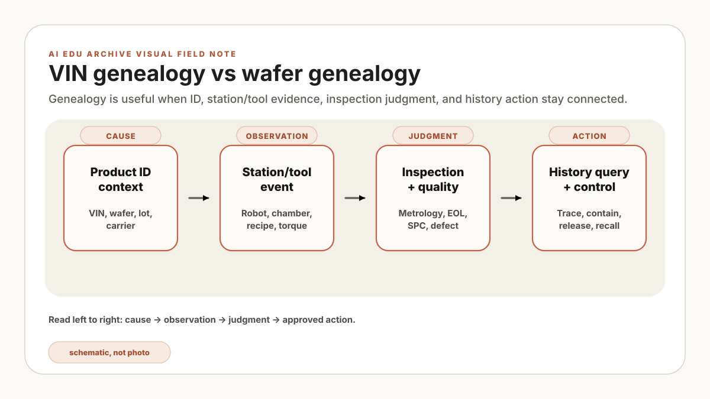
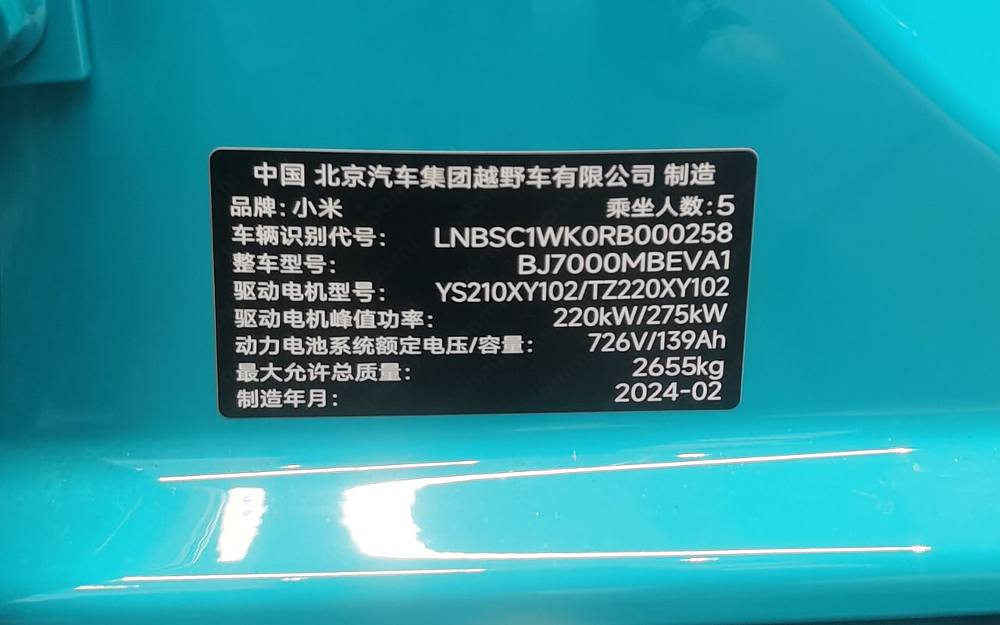
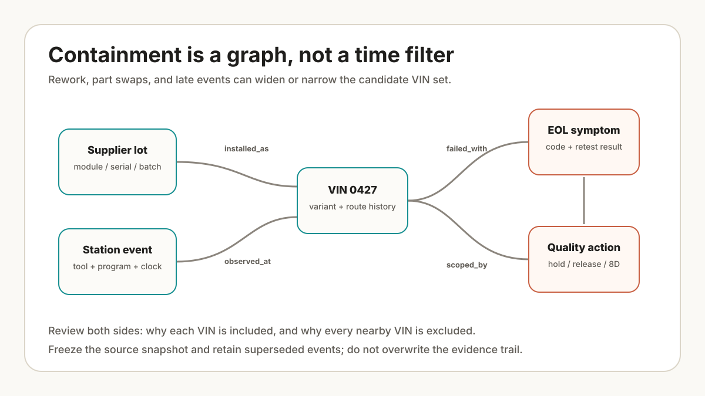

EOL 실패 차량 한 대가 화면에 올라오고, 품질 담당자는 같은 station을 지난 VIN 범위를 묻습니다. 조회 결과에는 수십 대가 나오지만 robot program revision과 rework 시각이 빠져 있어 어느 차량을 제외할지 설명할 수 없습니다. 처음에는 database에 event를 더 넣으면 풀릴 것처럼 보이지만, 실제 쟁점은 suspect set의 포함·제외 규칙입니다. 현장에서 흔한 조사 질문을 합친 가상 장면이며 특정 회사의 실제 회의가 아닙니다.
첫 manifest에는 품질 질문에 실제로 쓰이는 열만 표시해 보세요. VIN, station window, tool 또는 robot ID, 검사 결과, rework 여부, containment 상태부터 놓고 각 열이 포함 또는 제외 판단에 쓰이는지 적습니다. 어느 판단에도 쓰이지 않는 열은 보류하고, 빠진 근거가 확인될 때 supplier lot·작업조·maintenance 이력을 붙입니다.
기술적 판단의 출발점은 영향을 받은 대상과 제외 근거를 같은 timeline에서 재현하는 일입니다. FAB의 wafer genealogy는 lot, tool, chamber, recipe, step, metrology, hold 이력을 연결합니다. 자동차의 VIN genealogy는 차량별 부품, station, robot, torque tool, vision check, rework, EOL test를 잇습니다. 아래 필드와 manifest는 비교용 제안 프레임워크이며 실제 적용에서는 사업장의 식별자·보존 정책·품질 규칙으로 바꿉니다.
VIN 하나를 조회했을 때 station 이벤트, 공구 결과, 검사, 재작업, hold가 시간순으로 이어지는지 봅니다. timestamp 기준과 식별자 매핑이 다르면 AI 연결은 보류하고 같은 사건의 중복·누락부터 정리합니다.
Genealogy의 의미
Genealogy는 감사 대응용 traceability만 뜻하지 않습니다. 품질 조사의 backbone입니다. 차량이 EOL brake test에서 실패하거나 나중에 warranty symptom으로 돌아오면, 엔지니어는 그 VIN과 함께 이동한 제조 사실들을 따라가며 공통 조건과 제외 조건을 가릅니다.
Genealogy가 없으면 AI는 말 잘하는 검색창에 머물기 쉽습니다. Genealogy가 있으면 RAG와 Agent가 정확한 범위로 증거를 가져올 수 있습니다. 이 차량, 이 supplier lot, 이 station window, 이 robot program, 이 model variant, 이 shift, 이 containment boundary처럼 말입니다.

{kind=link}
VIN vs wafer
| Layer | FAB genealogy | Automotive genealogy |
|---|---|---|
| Product ID | Wafer ID, lot ID, carrier, product, route. | VIN, body number, module ID, part serial, variant. |
| Process location | Tool, chamber, recipe, operation, step. | Plant, line, station, robot cell, fixture, tool. |
| Process evidence | Trace, alarm, SPC, metrology, inspection, APC action. | PLC event, robot log, torque curve, vision image, Andon, rework. |
| Quality action | Hold, release, remeasure, rework, excursion review. | Containment, sort, rework, deviation, 8D, EOL retest. |
증거 timeline
설명을 위해 단순화한 가상 파일럿으로 body shop weld cell, final assembly torque tool, vision inspection, EOL test를 먼저 연결한다고 가정해보겠습니다. 한 VIN의 이벤트가 시간순으로 이어지고 원천 시스템까지 추적되는지 확인한 뒤, 공통 station window와 supplier lot으로 범위를 넓힙니다. 실제 우선순위는 고객 위험, 데이터 품질, 조사 빈도에 따라 달라집니다.
- Before station: VIN, model variant, build option, supplier lot, incoming inspection state.
- During station: station start/end, robot program, PLC state, tool ID, operator ID or team, safety state.
- Quality evidence: torque result, image result, defect code, rework reason, bypass reason.
- After station: release, hold, containment, EOL test, warranty feedback, field symptom.
설명을 위해 만든 가상 기록 6대를 놓고, 조건을 station T-220 통과 / program rev-B / 검사 전 rework 없음으로 정합니다. VIN-A·B·C가 앞의 두 조건을 공유하지만 VIN-B에는 검사 전 승인된 rework가 있습니다. 따라서 1차 suspect set은 A와 C, 제외 목록에는 B와 제외 근거를 남깁니다. 이어 torque 원시 기록과 EOL 결과를 원천 시스템에서 확인한 뒤 containment 범위를 확정합니다. Timestamp가 서로 다른 clock을 쓰거나 rework가 수기로만 남았다면 이 결과는 잠정 범위일 뿐 원인 증명이 아닙니다.

어떤 모델이 같은 station window, supplier lot, robot program, rework pattern을 공유하는 VIN 범위를 말하지 못한다면 품질 조사에 투입하기 이릅니다. 챗봇일 수는 있어도 아직 제조 assistant는 아닙니다.
RAG에 왜 필요한가
자동차 RAG는 genealogy로 검색 범위를 잡을 때 훨씬 강해집니다. "왜 EOL test가 실패했나요?"는 너무 넓습니다. 더 좋은 질문은 이렇습니다. "이 VIN에 대해 EOL failure, 이전 station event, 관련 torque record, 같은 증상의 DTC note, repair manual section, 과거 8D case를 가져와라."
여기서는 vector search와 structured filter가 같이 움직여야 합니다. Vector search는 비슷한 설명을 찾고, structured genealogy는 답변을 올바른 차량, 시간 구간, model variant, 품질 boundary 안에 고정합니다.
시작 manifest
아래 manifest의 plant, line, station, 질문은 설명을 위해 단순화한 가상 사례입니다. 실제 사업장의 VIN 키, station 코드, timestamp 기준, 품질 판정과 보존 규칙으로 교체한 뒤 품질·생산·IT 책임자의 승인을 받아야 합니다.
vin_genealogy_manifest:
scope:
plant: "plant-a"
line: "final-assembly-1"
stations: ["torque-220", "vision-310", "eol-900"]
entities:
- VIN
- station_event
- tool_result
- vision_result
- eol_result
- quality_action
required_keys:
- vin
- timestamp
- station_id
- equipment_id
- result_status
- source_system
first_questions:
- "Which VINs share this failed EOL symptom?"
- "Which station window is common?"
- "Which torque or vision evidence changed before the failure?"
- "Which rework or containment action already exists?"VIN timeline이 원천까지 추적되고 제외 근거가 남으면 AI는 요약, 검색, 비교, 조사 메모 초안을 도울 수 있습니다. 다만 상관관계가 원인을 증명하지는 않습니다. 같은 station window를 공유했다는 이유만으로 결함 원인을 확정하지 않고, 측정·재현 시험과 품질 책임자의 판정을 별도로 둡니다. 이 evidence chain을 시간 등급과 승인 흐름으로 연결하려면 다음 글인 자동차 조립 라인을 위한 Takt-aware AI Agent로 이어가세요.